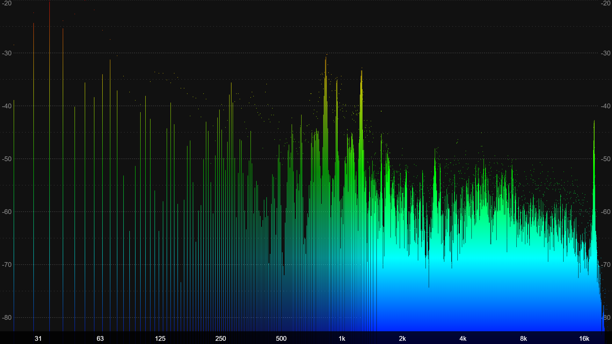
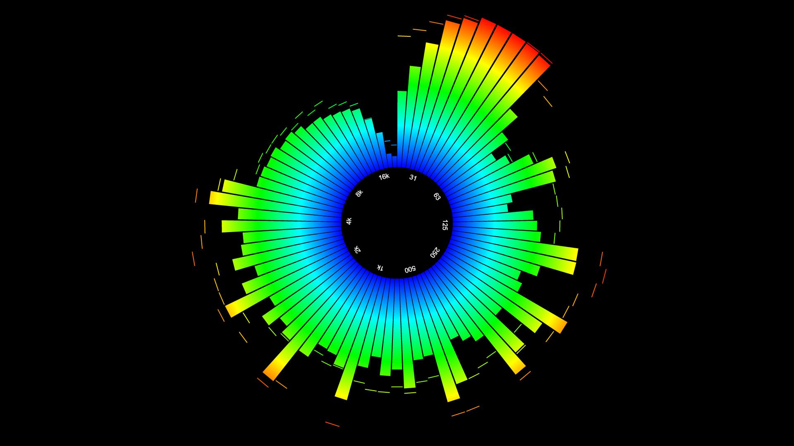
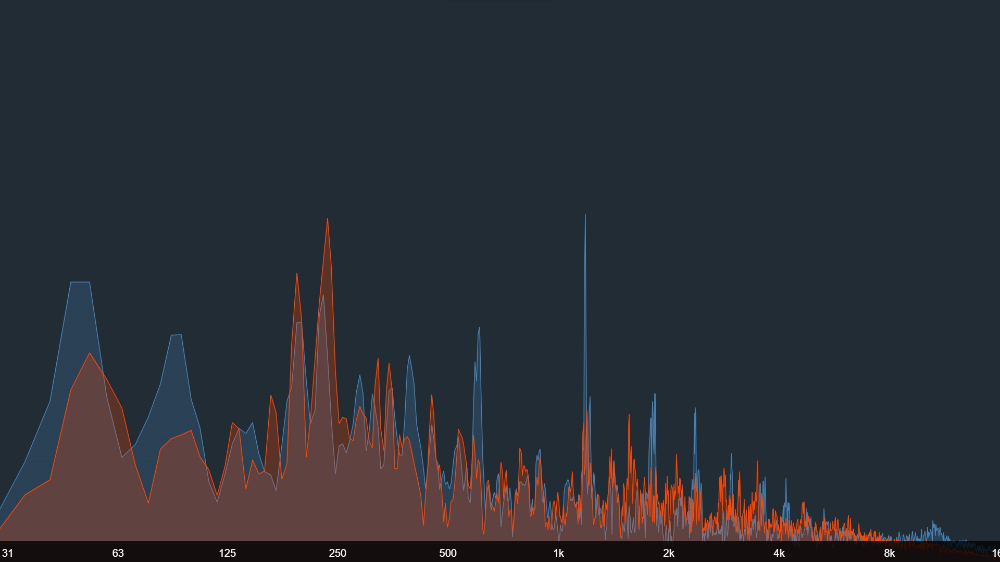
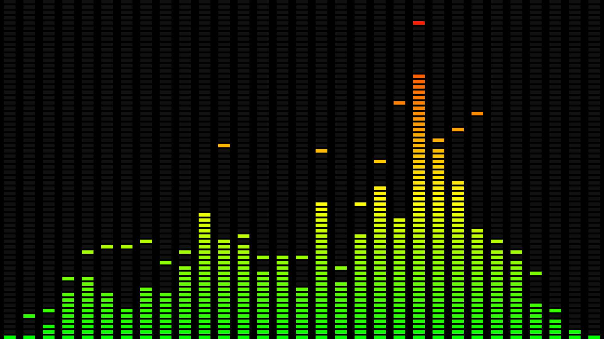
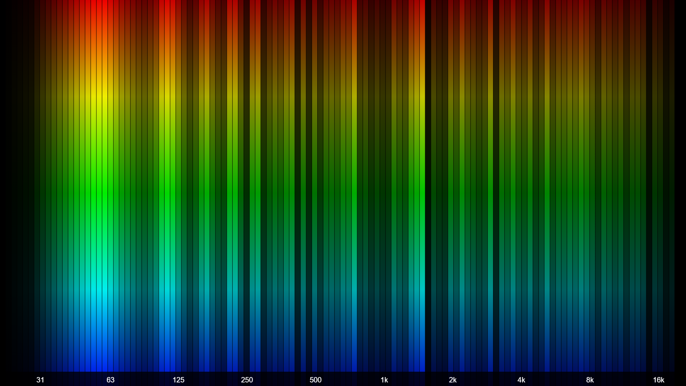
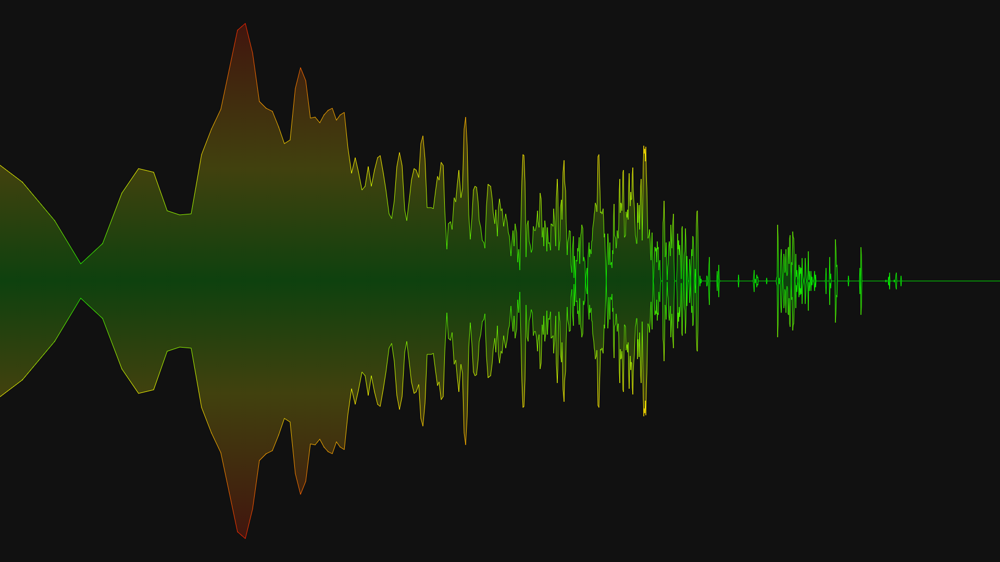

-
-
-
-
-
-
Bare minimum setup. See also this alternate version, which uses the UMD module via global variable.
Full-featured demo with all configuration options, responsive layout, microphone input and custom effects via callback function.
Multiple analyzer instances running simultaneously, each with its own configuration settings.
Audio visualization overlapped to a <video> element, demonstrates how to trigger fullscreen on the parent container element.
Preview of built-in themes with different settings.
For more code examples, check our CodePen collection.